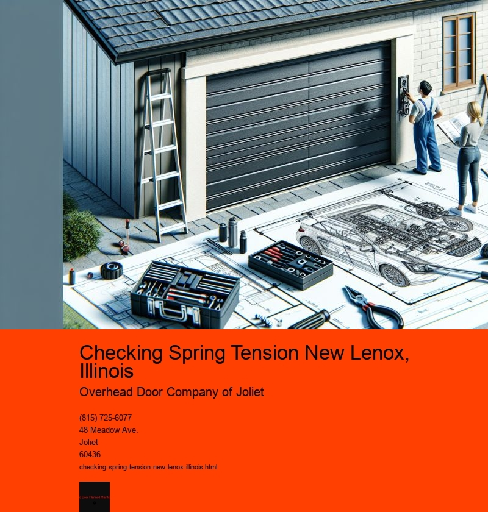

Checking spring tension is an essential task, particularly for those involved in various industries and applications in New Lenox, Illinois. This small town, nestled in the heart of the Midwest, is home to a range of businesses and individuals who rely on the precision and reliability of springs in their daily operations. Whether its for automotive applications, manufacturing, or even agricultural machinery, ensuring that springs function correctly is crucial for safety and efficiency.
Springs are ubiquitous components that serve critical functions by absorbing energy, providing resistance, or maintaining force among other roles. Over time, springs can lose their tension due to continuous use, environmental factors, or material fatigue. This gradual loss in tension can lead to inefficiencies or even failures in the machinery or products they are part of. Therefore, regular checks on spring tension become a preventative measure to avoid potentially costly breakdowns or accidents.
In New Lenox, where industries such as manufacturing and agriculture play significant roles, maintaining equipment in optimal working condition is paramount. Farmers, for instance, may rely on springs for machinery used in planting, harvesting, or maintaining crops. A failure in one of these components during a critical season can result in significant losses. Similarly, manufacturing plants depend on the consistent performance of machinery, where a single faulty spring can halt production lines, leading to downtime and financial losses.
The process of checking spring tension involves several steps. It typically begins with a visual inspection to identify any obvious signs of wear or damage, such as corrosion, deformation, or cracks. From there, more precise measurements are taken using specialized tools like tension testers or dynamometers to measure the force exerted by the spring. This data allows technicians to determine whether a spring is still within its operational specifications or if it needs replacement.
In New Lenox, there are several local businesses and specialists who offer services to check and maintain spring tension. These experts bring a wealth of knowledge and experience, ensuring that springs are maintained to the highest standards. By utilizing their services, local businesses can rest assured that their equipment will continue to operate safely and efficiently.
Moreover, the community in New Lenox emphasizes the importance of training and education regarding equipment maintenance, including the significance of spring tension checks. Local workshops and seminars often provide valuable information and hands-on training to those interested in learning more about maintaining their equipment. This proactive approach not only enhances the skill set of the local workforce but also strengthens the community's overall resilience against equipment failures.
In conclusion, checking spring tension is a vital practice in New Lenox, Illinois, due to the towns reliance on industries that require precise and reliable equipment performance. By regularly inspecting and maintaining springs, businesses and individuals can prevent costly disruptions and ensure the longevity of their machinery. The local expertise and commitment to education further underscore the importance of this practice, making it a cornerstone of operational efficiency in the region. As New Lenox continues to grow and develop, the attention to such detail will undoubtedly play a crucial role in its ongoing success.
Inspecting for Wear and Tear New Lenox, Illinois
